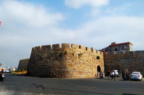
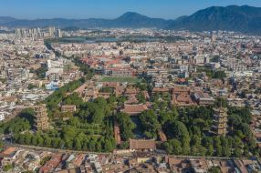
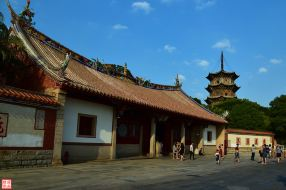

泉州游记什么是优质游记？申请必看

泉州、莆田、福州游（3/9之泉州边上的崇武古城）
市 天气晴15–27度，今天是此次出游的第三天，计划去泉州市区外东面海边的
东南海滨，濒临台湾海峡，系明洪武二十年（公元1387年）江夏侯周德兴经略海防时为抵御倭寇所建。抗倭名将戚继光、俞大猷驻此抗倭。古城内外，有20多处分别始建于宋、明、清，后经修葺延续至今的宫庵庙堂等古建筑遗存。城外半月海湾，有著名画家洪世清创作的大地岩雕———“鱼龙窟”，以及著名书艺大师朱屺瞻、钱君陶、刘海粟等人的篆刻书法精品镌刻在奇石怪礁上。古城下还建有现代石雕博览园及省级海边森林公园。

【泉州自由行攻略】我想住在泉州古城里，哪怕只是短短五天时间
一生必去的一座城市是哪里？白岩松的答案是，泉州。在旅游者的眼中，说起福建只叨得出浪漫的海滨城市厦门；但在旅行者的行程单里，泉州一定位在其中。这座古城，是闽南文化的发源地。它是国家首批历史文化名城，也是第一座被冠以“东亚文化之都”的城市。，是马可波罗笔下的“光明之城”，是宋元时的东方第一大港。走在泉州的街头巷陌，不经意间就回遇见一间寺庙，它们可能属于不同的宗教，有着不同的故事，所以此地也被称作“世界宗教博物馆 ”。我喜欢走在泉州的街头，散散漫漫，只为一品古城的清茶，吃过巷间的古早，沿着历史的足迹走在古城里，驻足在千年刺桐斑驳的历史黄页上。

海上丝绸之路起点泉州 那些不可不看的标志性景点
泉州，福建省的三大中心城市之一，联合国教科文组织认定的惟一海上丝绸之路起点，中国国家“一带一路”战略21世纪海上丝绸之路先行试验区。泉州为什么能冠有这么独特的响亮的名号？泉州海上丝绸之路起点的历史底蕴和魅力在哪里？请跟我来，看一看那些来泉州不得不看的标志性景点。一、开元寺（无门票，免费游览）
开元寺位于泉州市鲤城区西街，创建于唐垂拱二年(686年)，至今已有1300多年历史。